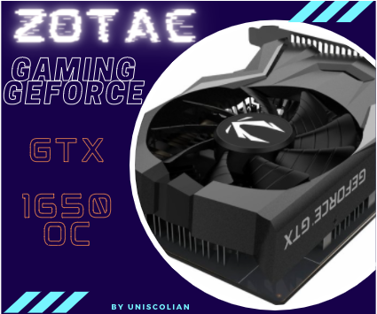
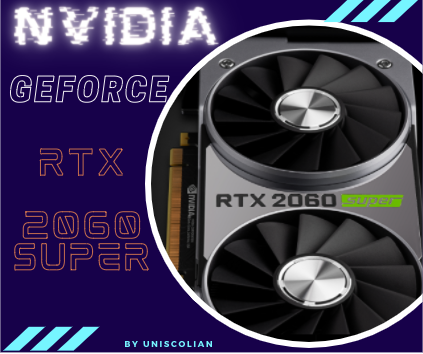
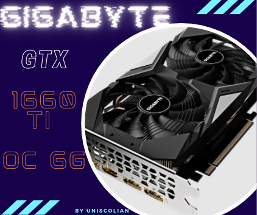
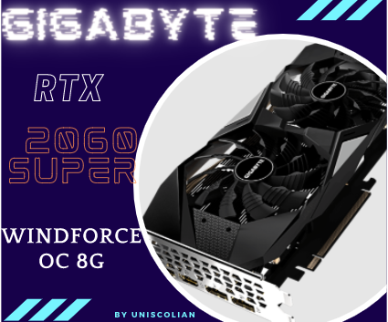

The gaming industry has been growing at an incredible rate in the past few years. The gaming industry is expected to grow from $137 billion in 2016 to $173 billion by 2021, with a growth of 22%. As gaming becomes more and more popular, graphics cards are needed for those who want to play the newest games on their computers. NVIDIA created its next-generation GPU that is designed specifically for gaming purposes!
Graphics cards are becoming more and more important to people who want the best performance from their computer. The i3 9100f is a popular processor that can be used with graphics cards, but there are many different choices for graphics cards that may not work well with this specific processor. In this blog post, we will discuss all of the most popular graphics cards for i3 9100f processors so you can make an informed decision about which one suits your needs!
When selecting the GPU for a Core i3 9100f-series, there are three main factors to consider: how much you want to spend on your hardware and what it will be used for – gaming, video editing, streaming, or other applications. The performance of the CPU can also impact these decisions as well as whether you need a single GPU or a dual-GPU.
ZOTAC GAMING GeForce GTX 1650 OC

The ZOTAC GAMING GeForce GTX 1650 OC graphics card comes with many features that will make you want to buy it. The most impressive feature would be the 90mm Single Fan for providing a cooler and quieter gaming experience. It also has a Sunflower Heatsink which helps to keep gaming graphics cards cool during intense gaming sessions.
Another great feature of this gaming card is the super compact size which will not take up much space on your desk or in any PC case for that matter. You can enjoy gaming with a smaller PC and still have all the power you need to run high-resolution games like Battlefield V at 60 frames per second. Which makes it a remarkable graphics card for the i3 9100f CPU.
The gaming card has a PCIe Bus-Powered so it does not need an extra power connector to work, which saves you money and time as well. This gaming graphics card also comes with OC Scanner for testing max clock speeds in gaming at the touch of a button or by setting your desired level manually.
| Pros | Cons |
| Compact gaming graphics card for smaller PCs. | Smaller PCs will need slower games and resolutions than larger ones when this gaming graphics card is used. – Graphics card does not have an extra power connector and relies on PCIe Bus Power which can cause gaming issues with PCs that do not provide enough power to the graphics card. |
| Has an OC Scanner button that can be used to test max clock speeds in gaming at the touch of a button or by setting your desired level manually. |
NVIDIA GEFORCE RTX 2060 SUPER

The NVIDIA GeForce RTX 2060 SUPER is the latest gaming graphics card from NVIDIA. It features a 1650 MHz boost clock and has 768 CUDA Cores with up to 41 RTX-OPS, giving it more than enough power for gaming at 1440p or in VR. Compared to its predecessor, this new gaming card also includes an improved memory bandwidth, with 14 Gbps of gaming-grade GDDRX RAM and 448 GB/s.
In comparison to the GTX 1080 which is a more expensive card for gaming, this RTX 2060 SUPER features are comparable in terms of performance but at a lower price point which makes it one of the best i3 9100f graphics card. Another notable difference between these cards that you may want to consider is that the RTX 2060 SUPER has a lower power draw and is much quieter.
I found gaming with this card to be really smooth. The FPS was pretty consistent, even in more demanding games like Fortnite Battle Royale at “Epic” graphics settings or Battlefield V at Ultra quality preset. Plus its overclocked performance means it can handle gaming at 1440p or even in VR.
The GEFORCE RTX 2060 SUPER is a great choice for those who are looking to build their gaming PC and don’t want the highest-priced card. Plus with this new graphics card, you’ll be able to play amazing games like Battlefield V on Ultra quality, Fortnite on Epic quality, and more.
The GEFORCE RTX 2060 SUPER has all of NVIDIA’s latest and greatest gaming technology packed in. It also overclocks like crazy so when games get too demanding for your standard settings.
Here’s what you need to know about NVIDIA Geforce RTX 2060 Super:
– It has 2176 CUDA cores which can be boosted up to 41 trillion operations per second (TeraFLOPS) – 6 Gigarays/s and 1470 MHz base clock speed
– It supports gaming at 7680×4320 resolutions
– Its memory includes a standard configuration of gaming-grade GDDR graphics and it has 448 GB/sec RAM bandwidth. This is about twice as fast as previous-generation cards in their gaming range, including the GeForce RTX 2060
– The card will come with an improved cooling solution that helps to keep gaming temperatures down
| Pros | Cons |
| gaming at 7680×4320 resolutions | gaming at 7680×4320 resolutions is possible, but not the best for gaming. The NVIDIA GEFORCE RTX 2060 SUPER is better suited to gaming at 1920 x 1080 resolution or lower which still provides an excellent gaming experience and will also be more likely stable for most gamers. For those that play games with extremely high graphics settings, gaming at 7680×4320 resolution should be avoided. |
| About twice as fast as previous-generation cards in their gaming range, including the GeForce RTX 2060 | The GEFORCE RTX 2060 SUPER is still only viable for gaming once you’ve turned off some of the advanced anti-aliasing features that are usually required in gaming, such as NVIDIA DLSS and TAA. |
| The improved cooling solution helps to keep gaming temperatures down. It features a new fan design and an advanced vapor chamber for higher air pressure and quieter performance than its predecessors. | If you have what is called “nongaming” work that is more demanding, there are better cards to consider. |
| It’s also worth noting that the card does consume more power than other cars in its class and will require a PSU of 600 watts to run without a problem. |
My Opinion
The RTX 2060 Super can be considered to be one of the best graphics cards for the Intel i3 9100f CPU.
GIGABYTE GTX 1660 Ti OC 6G

The GeForce® GTX 1660 Ti OC PC gaming graphics card is a great option for gamers looking to upgrade their gaming experience with Core i3 9100f CPU. The new NVIDIA Turing™ architecture provides groundbreaking performance and amazing results in comparison with past generations of gaming cards, making it the perfect choice for both experienced and novice gamers alike. This advanced GPU allows you to play your favorite games smoothly and with better gaming graphics.
This ASIC includes 1536 CUDA cores as well as a 192-bit memory interface running at 12000 MHz, giving it 288 GB/s of bandwidth. The GTX 1660 Ti also features 640 texture units which provide high gaming performance by eliminating the need to swap textures when rendering frames in your favorite games.
The GTX 1660 Ti has a gaming power target of 120 W, meaning you can play your favorite games without the worry of exceeding that limit and causing damage to your GPU. The TDP includes 75% for gaming purposes and 25% for all other tasks such as video playback or browsing the internet. This is in comparison with past gaming GPUs which had gaming power targets of 100%.
The GTX 1660 Ti has a core clock speed of 1800 MHz, with the reference card running at 1770 MHz. The GDDR memory is clocked in at 12000MHz, providing an impressive framerate for your gaming needs. With this bandwidth and size you’ll be able to enjoy 1080p gaming without any of the stuttering or screen tearing you might experience with other gaming GPUs. Which makes it one of the best GPU for Core i3 9100f.
The GTX 1660 Ti has a TDP of 120 Watts, with the reference card being at 160W. The gaming graphics card is smaller than some other gaming GPUs on the market measuring 225x122x40mm (LxWxH). This size makes it easier to fit in gaming cases that may not have room for bulkier gaming GPUs.
The GTX 1660 Ti video card provides a max resolution of 7680×4320@60Hz, with the reference card being only at 1920×1080@144Hz. The size is also small enough to fit into your laptop case making it more portable than gaming GPUs with larger frame sizes.
The gaming graphics card is capable of playing most games at 1080p without issue, and when you do need to ramp up the settings it still manages to maintain 60 fps on average gaming rig setups. The GTX 1660 Ti provides an excellent gaming experience with no noticeable frame rate drops or screen tearing issues making it an ideal gaming card.
| Pros | Cons |
| The gaming graphics card is capable of playing most games at 1080p without issue, and when you do need to ramp up the settings it still manages to maintain 60 fps on average gaming rig setups. | gaming performance for high settings and resolutions will be compromised, but this can be resolved by turning down some of those options. |
| The GTX 1660 Ti provides an excellent gaming experience with no noticeable frame rate drops or screen tearing issues making it an ideal gaming card. | cards require an external power connector with PCI Express® (PCIe) x16 slot space available to run it. |
| the card has low power consumption and generates little heat. | the card has low gaming performance compared to other cards in the price range, but this can be resolved by turning down some of those options. |
| cards support DX12 out of the box without requiring any additional driver installation or tweaking. | gaming is not as good on high settings and resolutions because gaming performance is not as good, but gaming on low settings and resolutions will be just fine. |
| has reasonable power consumption and low heat output compared to other cards in its price range, perfect for use at home or office desktops where space can be limited. |
Related Article: What should you pay attention to when buying a graphics card?
GIGABYTE RTX 2060 SUPER WINDFORCE OC 8G

The Gigabyte RTX 2060 SUPER WINDFORCE OC is an impressive gaming card with a 1680 MHz clock speed, which is 50MHz higher than the reference card.
It has some nice overclocking features and it’s made to run cool without any noise or throttling thanks to its Windforce cooler design that uses three 100mm fans that are set up to push air onto the backside of the card.
Gigabyte is also using some gaming-focused features like a power boost, which helps provide extra overclocking potential with an external PCIe power connector for more than 50W. The only downside I could find was its lack of RGB lighting and it has some gaming-specific features, but it does not have any analog inputs for a monitor.
The Gigabyte RTX 2060 SUPER WINDFORCE OC is an impressive Core i3 9100f gaming card with cooling performance while running silently without throttling or noise.
It’s also designed to be able to run under the most intense gaming loads possible but is limited to gaming use.
GIGABYTE RTX 2060 SUPER WINDFORCE OC review
I was ecstatic that I could play games on my PC at ultra settings and not have to worry about frame rates going below 30 fps like what would happen on my gaming laptop.
So, the super gaming power in this card is definitely worth it if you are looking for something that will get you more frames per second than say a GTX 1070 or even an RTX 2070 and save some money while still getting decent gaming graphics. This card is also perfect for gaming at high settings on 1080p screens.
I was worried I would have to buy a new monitor or my computer tower so the graphics card could handle gaming, but luckily it worked with the one that I already had which made me very happy and relieved.
The only con about this gaming graphics card is that it doesn’t come with an HDMI cable which was a little disappointing since I had to go out and buy one.
However, if you’re looking for something affordable but still great quality then the GIGABYTE RTX 2060 SUPER WINDFORCE OC should definitely be on your list.
| Pros | Cons |
| The Gigabyte RTX 2060 SUPER WINDFORCE OC comes with factory overclocking for a card of this type and its cooling performance met all expectations while running silently. | The only downside I could find was its lack of RGB lighting and it has some gaming-specific features, but it does not have any analog inputs for a monitor. |
| The Gigabyte RTX 2060 SUPER WINDFORCE OC has some nice overclocking potential and cooling performance while running silently without throttling or noise. | It’s also designed to be able to run under the most intense gaming loads possible but is limited to gaming use. |
| Affordable gaming graphics card with a high frame rate. – Gives you the power to play on a 1080p screen without too much of an issue. | Doesn’t include the HDMI cable which was slightly disappointing but not enough to make me want to downgrade the rating. |
| The price is well worth it for what you’re getting in this gaming graphic card – not many other gaming graphics cards offer these features as affordable as this gaming graphic card does. |
MSI Radeon RX 5600 XT GAMING X
MSI is a gaming brand that has always been known for its gaming cards. As such, it’s no surprise to see them release the MSI Radeon RX 5600 XT GAMING X graphics card under the gaming series line-up. The company used its years of experience in building high-quality and fast gaming graphic cards to produce the MSI Radeon RX 5600 XT GAMING X gaming card.
As mentioned, this gaming graphic card is part of MSI’s gaming series line-up that offers gamers a number of different features and performance levels to choose from. The MSI Radeon RX 5600 XT GAMING X has 23040 units for graphics processor clocked at a boost frequency of 1750 MHz and gaming/base frequencies clocking at 1615MHz. It also has a memory speed of up to 14Gbps, with its GDDR-VIII Memory that delivers speeds of up to 25600MTps.
The MSI Radeon RX 5600 XT GAMING X graphics card is powered by an estimated 150 W, requiring a 450W power supply for gaming. The MSI Radeon RX 5600 XT GAMING X gaming card also has a max digital resolution of 7680×4320 and can support up to six displays at the same time!
I give this gaming card from MSI five stars for its high-quality performance in gaming, top speeds, powerful double/triple-fan cooling system, and also because it is VR Ready. Overall amazing graphics card choice for core i3 9100f.
| Pros | Cons |
| gaming card is lighter than expected at around a half-pound. | The MSI Radeon RX 5600 XT GAMING X graphics card takes up two slots in your computer case, which may make things difficult if that’s not what you have available to use. |
| Runs cool and doesn’t get hot even when gaming for hours on end. | requires more power than other graphics cards when gaming or using video editing software. |
| gaming on 1080p is smooth and doesn’t lag. | the gaming graphics card is bulky and large, making it hard to fit into smaller gaming desktops or laptops that have limited space. |
| The gaming card has a durable build with metal shielding, as well as a heat sink heatsink to keep the GPU cool during gaming sessions. | MSI Radeon RX 5600 XT GAMING X has poor compatibility for gaming with Nvidia cards and AMD cards. |
| the Radeon RX 5600 XT gaming X is equipped with gaming-specific features such as AMD’s Raptr gaming software and a gaming mode that optimizes the card for smoother performance. | the gaming graphics card does not come with an HDMI cable which might be a problem if you don’t already own one yourself. |
Final Thoughts
ZOTAC GAMING GeForce GTX 1650 OC is the best choice for i3 9100f if you are looking to buy a low-cost gaming graphics card that will pack a performance punch and has an option of overclocking.
The gaming card is easy to install and works great with PCs that have a smaller case or in home theater systems. The gaming graphics card also has the option for overclocking which can be done through Zotac software called “ZOTAC OC Scanner”.
It should not be used on gaming PC gaming systems with larger cases as it can cause some gaming stability issues. The graphics card is very compact and can be used in smaller gaming systems or home theater systems without occupying an entire slot of PC space. The gaming GPU also has enough performance to run games on a full HD resolution at 1080p with high detail settings for the smoothest gameplay experience possible.
Related Article: What Graphics Settings Should You Adjust to Your PC for gaming?
Does i3 9100F need a graphics card?
Intel core i3 9100f series processors have an integrated GPU, so they typically don’t need a discrete graphics card. If you’re going to be doing heavy gaming or video editing on your machine, then the answer is yes – but only if it meets certain requirements:
– It needs to have a memory size that’s at least as large or larger than the core i3 9100f-series processor.
– The card should be no more than one generation older than your Intel core processor.
If you’re not going to be doing heavy gaming, then it depends on what tasks you’ll be using your computer for. If you’re looking to do things like video editing, then yes. Otherwise, no.
Is RTX 2060 compatible with i3 9100F?
The RTX 2060 is not compatible with the Intel core i3 9100f-series. The only current GPU that can work on this processor is an AMD graphics card due to Intel’s proprietary drivers for its own processors and chipsets. It has a max refresh rate of 60Hz, but it will be able to handle limited gaming when paired with an appropriate GPU.
You might also like the following Article: Recommended Laptops in the US in 2023 [TOP21]